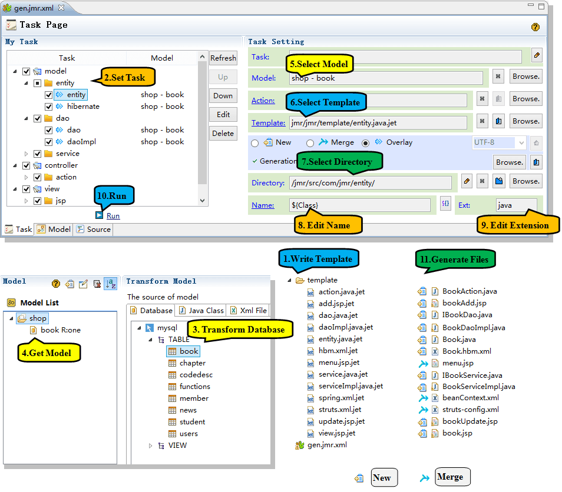

Jmr how to use the development, and how to bring efficiency improvements, this is what we are most concerned about. Let's look at a Java Web project.
According to the table of the database, transform model generate a complete CRUD module, there are 4 steps:
1 Write template
2 Set task
3 Get model(from database)
4 Run

Any type of project or framework. As long as repetitive code can be automatically generated using jmr.
1) Write templates: including entity class, dao, service, action; add mapping in hibernate, register bean in spring, register action in struts, and crud pages. Of course, you can also write the template according to your framework, using Jmr can be very easy to do.
2) Set the task: Set the task according to the file you want to generate.
3) Transform model: transform database table to model, we use init scheme to transform model and reduce the workload of modify model.
4) Modify model: According to the rules of your project, you can modify or add some property or column, which pass to the template.
Add three properties:
Add three columns:

5) Set model to task
6) Select the model
7) Run tasks
8) Generate a complete CRUD module
Query and list page

New page

Update page